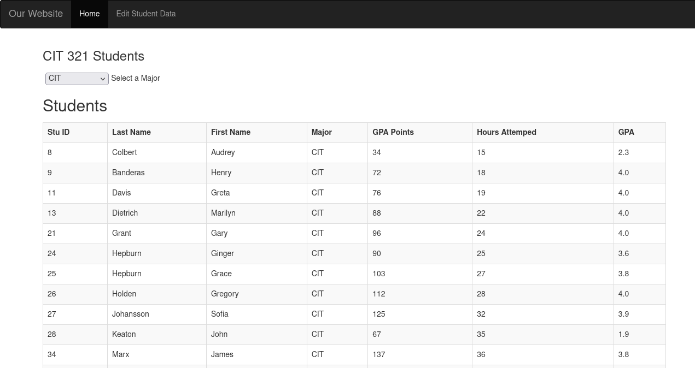
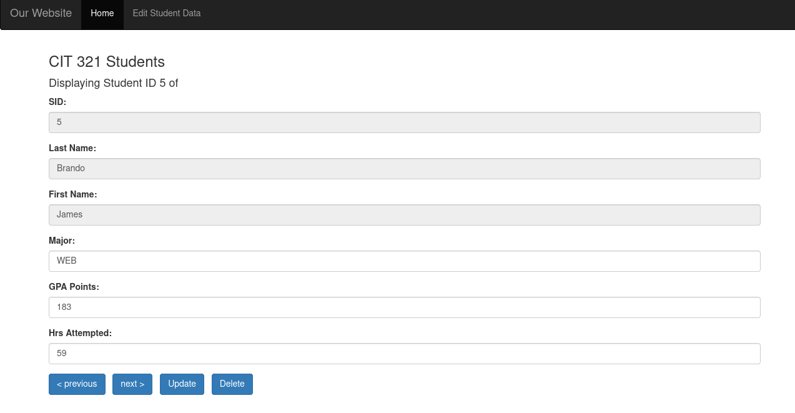
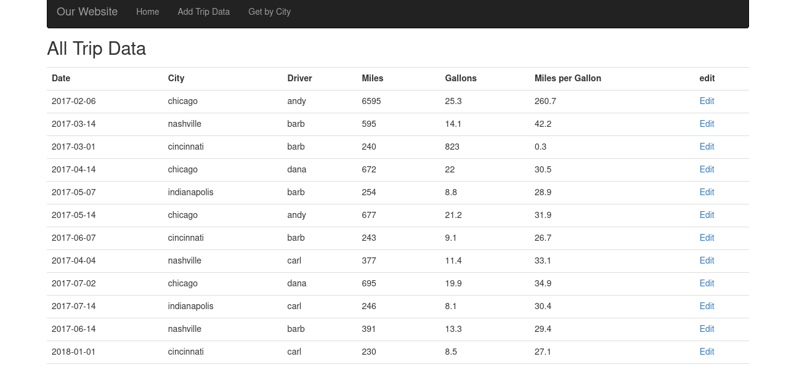

Student Records App


A full-stack application built with Node.js, Express, Bootstrap, MongoDB, and Mongoose that allows users to view, filter, update, and delete student records. This project was developed and tested locally.
Technologies:Node.js, Express, Bootstrap, MongoDB, Mongoose, Vue.js
GitHubTrip Data App

A full-stack application built with Node.js, Express, Nunjucks, Bootstrap, MongoDB, and Mongoose that allows users to view, filter, create, update, and delete trip data. This project was developed and tested locally.
Technologies: Node.js, Express, Nunjucks, Bootstrap, MongoDB, Mongoose,
GitHubPersonal Portfolio Website
A responsive website built with HTML, CSS, and JavaScript to showcase my writing, résumé, and programming projects.
Technologies: HTML, CSS, JavaScript, GitHub Pages
GitHub